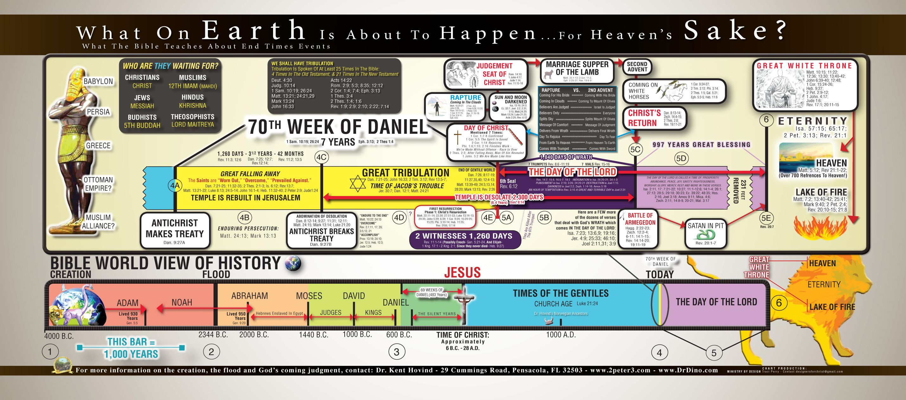

Om mig
|
Om Reunion
|
Evenemang
|
Galleri
Video för er som vill lära er mer om hur jorden skapades

Tidslinje, Drdino.com, Kent Hovind.
Duva gör ljud
Marie-Lan Taÿ Pamart, CC BY-SA 4.0
, via Wikimedia Commons
Duva flyger
Karthik Easvur, CC BY-SA 3.0
, via Wikimedia Commons